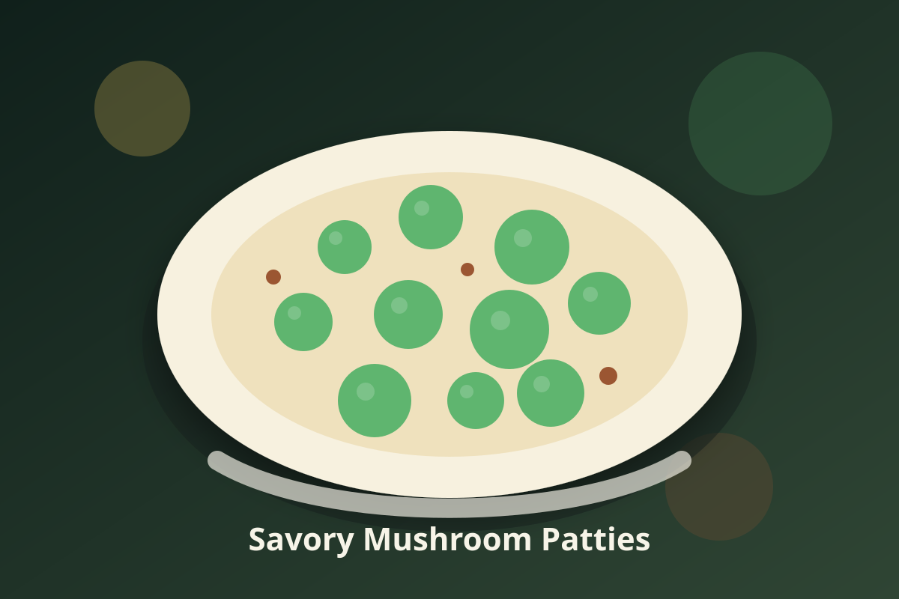
Bonfire Mushroom Patties
Crispy air-fried patties of browned mushrooms and tofu with thyme, allspice, and lime.
Fresco recipe links
Open a recipe and use its public URL with compatible recipe importers.

Crispy air-fried patties of browned mushrooms and tofu with thyme, allspice, and lime.
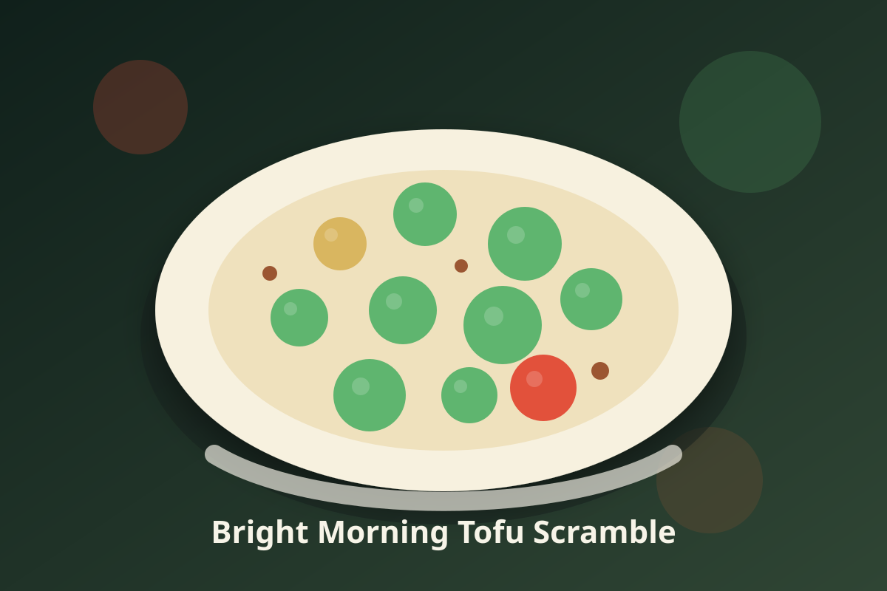
Turmeric tofu scramble with crisp golden potatoes, scallions, and a squeeze of lime.
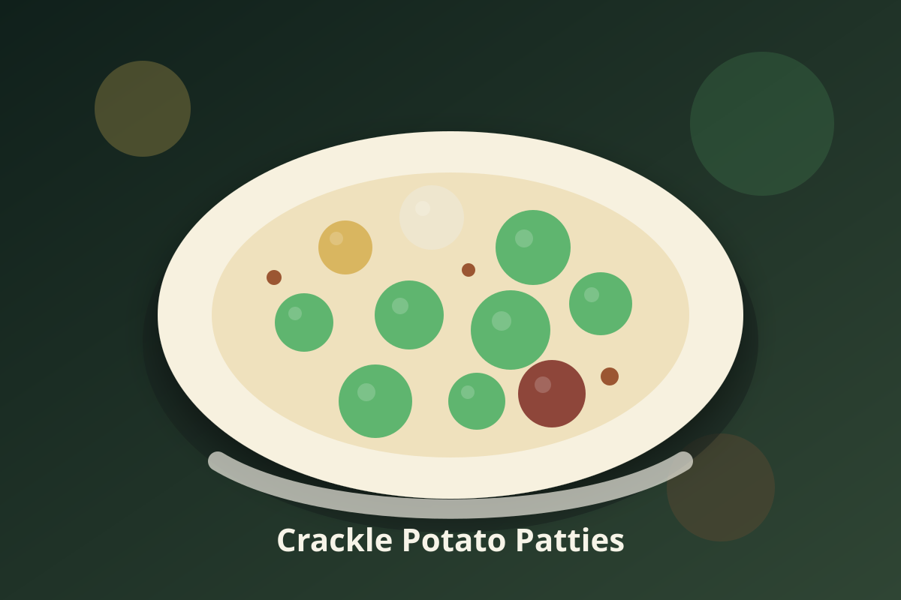
Crisp oven-baked patties of mashed potato, cauliflower, and chickpeas seasoned with thyme and allspice.
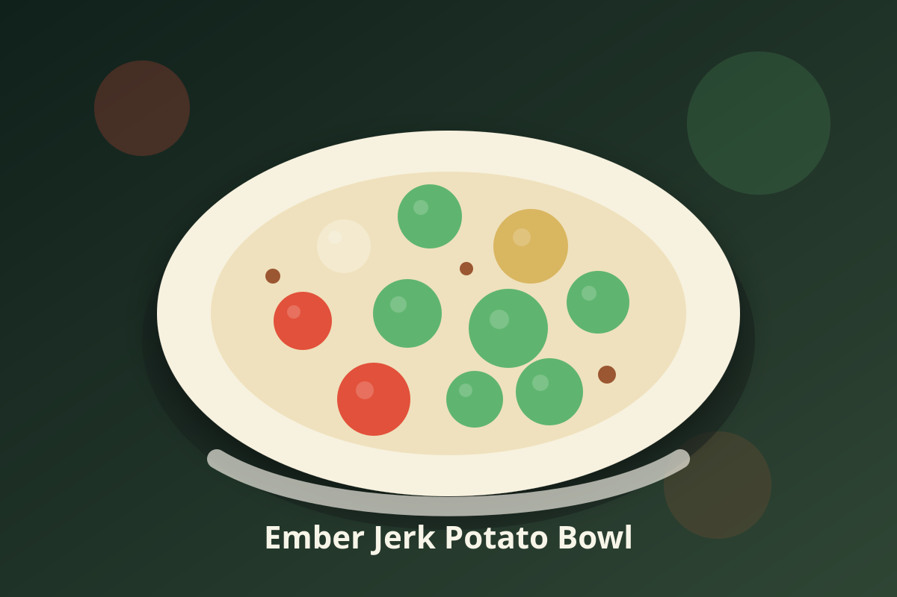
Jerk-marinated potatoes and peppers, air-fried until charred, over brown rice with a coconut-lime drizzle.

Air-fried jerk tofu and charred cauliflower over brown rice with creamy coconut black beans.

This dish combines tender spaghetti squash stuffed with a flavorful mixture of black beans, zucchini, brown rice pilaf, and topped with a spicy sauce. The whole meal is cooked in an Instant Pot for maximum convenience.
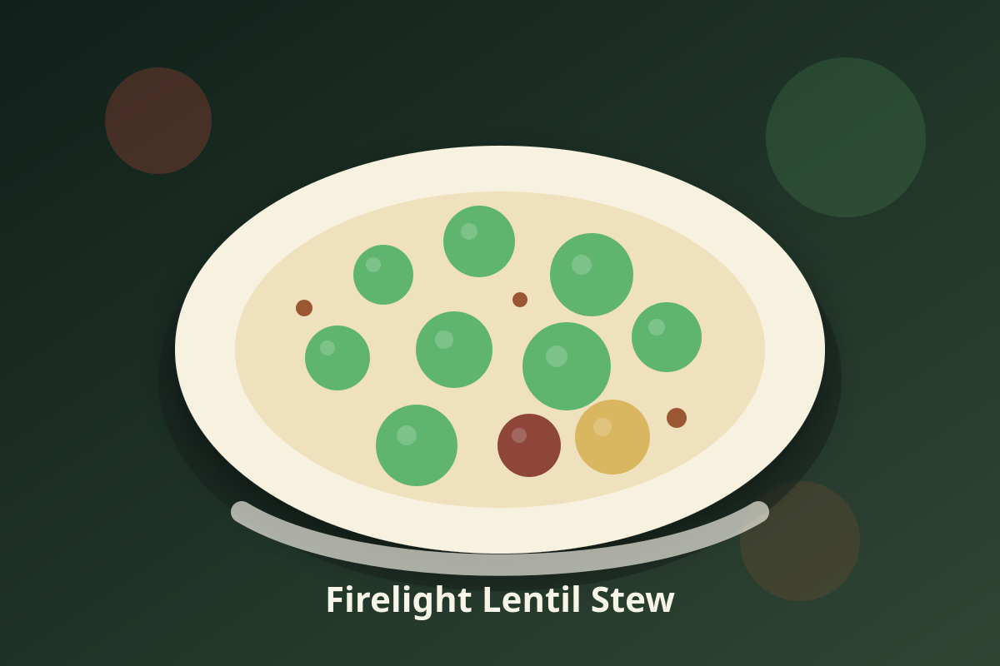
Lentils, carrots, and potatoes in a thyme and allspice broth enriched with coconut milk.
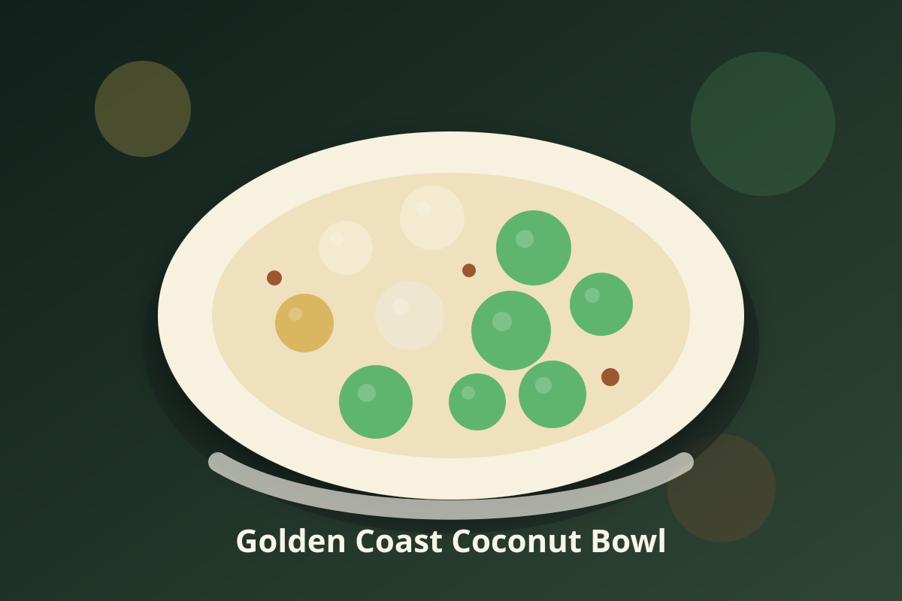
Brown rice bowls topped with steamed potatoes and cauliflower in a thyme-scented coconut sauce with chickpeas.
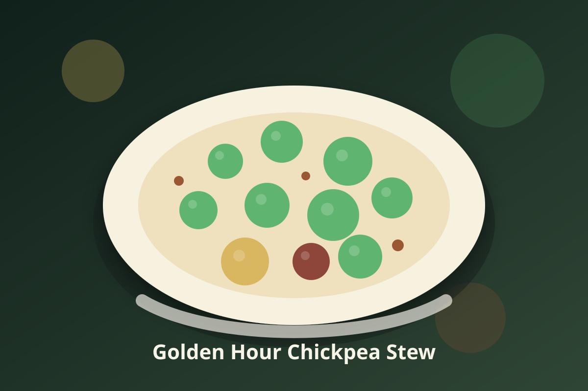
Sweet potatoes and chickpeas simmered with thyme, allspice, and light coconut milk, finished with lime.
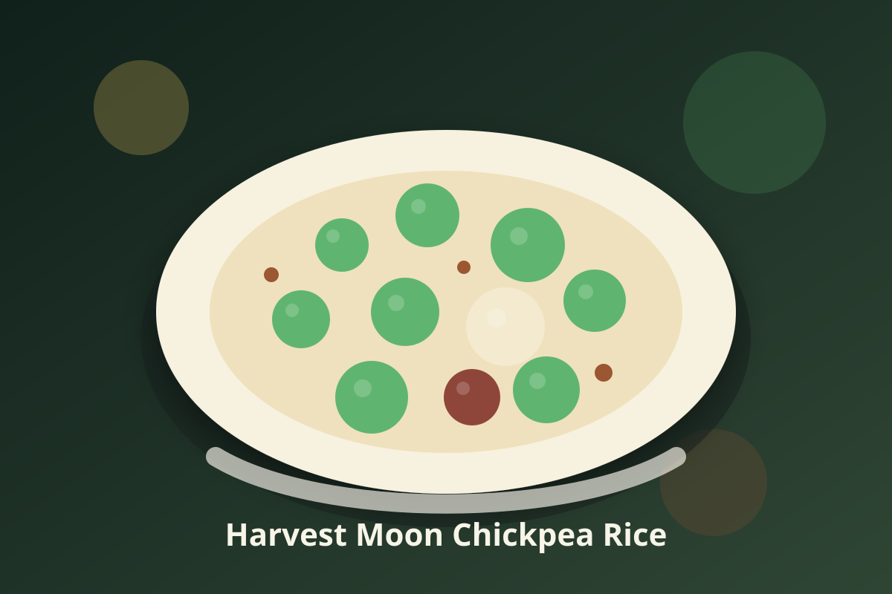
Brown rice and chickpeas cooked with tomatoes, smoked paprika, and cumin, finished with lemon and parsley.

A comforting stew of golden sweet onions, chickpeas, and tender cabbage, warmed with cumin and finished with lemon.
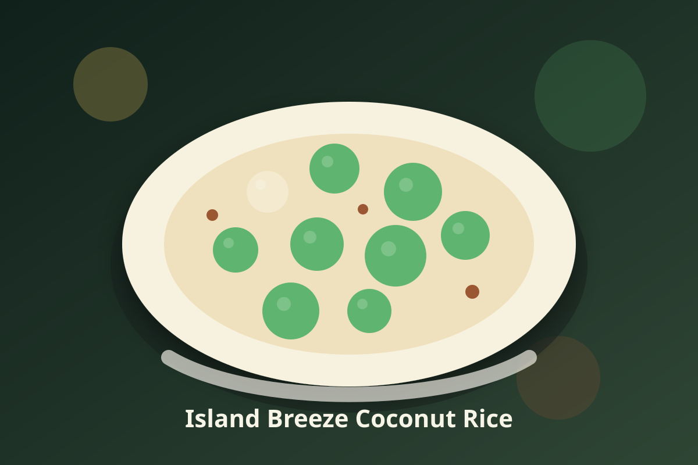
Toasted brown rice cooked in coconut milk with garlic, thyme, and scallion, brightened with lime.

Jamaican-style spinner dumplings simmered in a garlic, thyme, and allspice broth.

Potatoes, cauliflower, and chickpeas in a Jamaican curry and coconut sauce, ready in one pot.

Eggplant, potato, and red pepper in a red curry coconut broth with lime and basil.
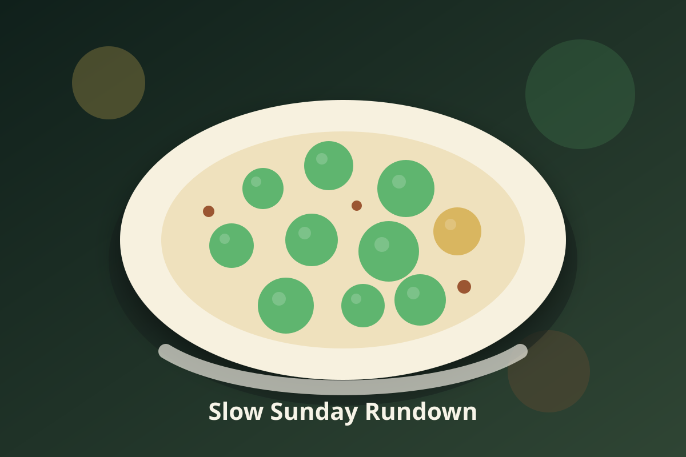
A Jamaican rundown: potatoes, cauliflower, and chickpeas simmered until the coconut sauce runs down thick.
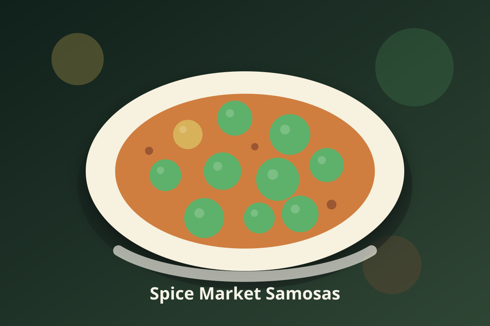
Crisp air-fried samosas filled with spiced potatoes and peas, finished with lime and cilantro.
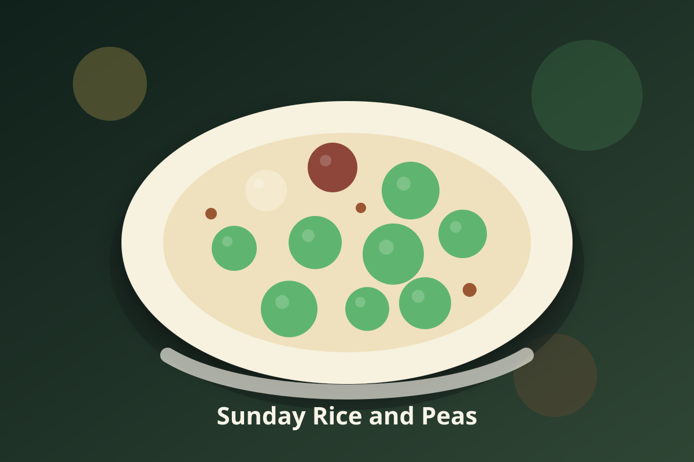
Classic Jamaican rice and peas: brown rice and kidney beans cooked in coconut milk with thyme, scallion, and allspice.

A silky, savory gravy of browned mushrooms, thyme, and tamari for rice, mash, or dumplings.